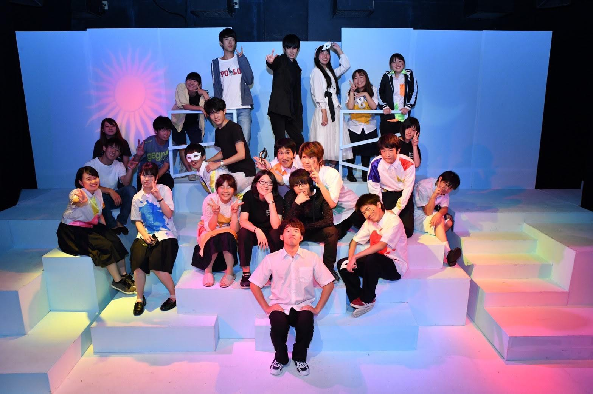

/演劇集団関奈月
演劇集団関奈月は、現在男10名、女6名で活動しています。
大阪や兵庫にある劇場をお借りして、年に3・4回程度の公演を予定しており、 毎週月・水・金・土に稽古を行なっています！ 役者はもちろん裏方も、初心者・経験者問いません。 演劇に少しでも興味がありましたら、ぜひ一度部室に来ていただくか、公式SNSまで相談・質問などご連絡ください！ 部員一同、お待ちしております！
大阪や兵庫にある劇場をお借りして、年に3・4回程度の公演を予定しており、 毎週月・水・金・土に稽古を行なっています！ 役者はもちろん裏方も、初心者・経験者問いません。 演劇に少しでも興味がありましたら、ぜひ一度部室に来ていただくか、公式SNSまで相談・質問などご連絡ください！ 部員一同、お待ちしております！
色々と嫌なお知らせが続いてますが‼️
— 関西学院大学 演劇集団関奈月2020 新歓用アカウント (@Kannazuki_2020) March 26, 2020
関奈月は次の公演に向けて準備を進めています💪
今回は公演までの道のりを動画でまとめました📽
これを見れば関奈月がどんな活動をしているのかわかって頂けると思います😊#関奈月 #春から関学 pic.twitter.com/0cKixDW3fa
/活動日
毎週月・水・金・土曜日
/所属人数
16人
/質問会
LINEオープンチャットを開いています。匿名で参加できますので、演劇やキャンパスライフについて質問・相談などありましたら、お気軽にご参加ください！
【オープンチャット💬】
— 関西学院大学 演劇集団関奈月2020 新歓用アカウント (@Kannazuki_2020) April 17, 2020
演劇集団関奈月は、ラインオープンチャットを開いています！
現在は関奈月の紹介をはじめておりますよ✨
発言は自由ですので、質問や雑談なんでもしていただけます。
ぜひ参加してみてくださいね😊 https://t.co/BVjbnm3LLt
オープンチャット「2020 関奈月 新歓」https://t.co/m0hcve5yd5
— 関西学院大学 演劇集団関奈月2020 新歓用アカウント (@Kannazuki_2020) April 10, 2020
/お知らせ
5月1日〜3日に行う予定でした、演劇集団関奈月vol.30『LENS〜名探偵天城ノ事件簿 幽霊図書館篇〜』は延期となりました。
詳細は追って公式ツイッターでお伝えしていきますので、ぜひご確認ください。